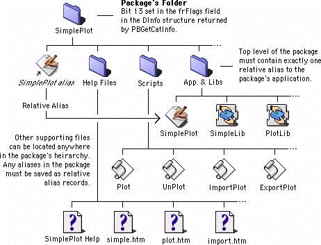
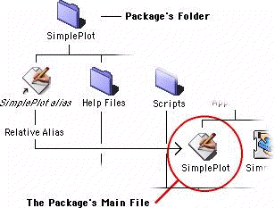

Legacy Document
Important: This document is part of the Legacy section of the ADC Reference Library. This information should not be used for new development.
Current information on this Reference Library topic can be found here:
ADC Home > Reference Library > Technical Notes > Legacy Documents > Mac OS 9 & Earlier >
Important: This document is part of the Legacy section of the ADC Reference Library. This information should not be used for new development.
Current information on this Reference Library topic can be found here:
|
OverviewPackages in Mac OS 9 are not complex. Simply said, a Package in Mac OS 9 is a folder with the "package bit" set that contains exactly one alias file at the topmost level. Normally, a package will consist of an application and a number of support files organized into sub-directories. There is only one requirement governing the internal organization of packages, and there are no restrictions on how package sub-directories can be named, how package sub-directories must be organized, or what package sub-directories must contain. Figure 1 provides an illustration of a hypothetical package named SimplePlot.  Although requirements for packages in Mac OS 9 are few, Figure 1 illustrates the two main requirements for packages: the appropriate Finder flag must be set for the package's folder and exactly one relative alias must be present in the top-level of the package's directory hierarchy. The Package FlagThe folder containing the package has bit 13 (for files, the
In Mac OS 9, any folder having this bit set is recognized as a package. If this bit is set, and the folder contains exactly one alias at its topmost level, then the Finder will treat the folder as a package. In some circumstances, due to a software problem or a crash, a folder may wind up having the package bit set when in fact it is not a package. In this case, the Finder will treat such a folder as a "damaged package" and its icon will appear as a blank document with the kind string set to "package." To correct this problem, there is a utility called "Package First Aid" provided on the Mac OS 9 install CD. The Top-Level Alias FileThe package's folder contains exactly one alias file at its topmost level. This alias points to some other file in the package's directory hierarchy; and, it should be a relative alias so that it will remain valid if a package is copied to another volume. In this discussion, the file pointed to by that alias is called the "package's main file."
The package's main file governs the behavior of the package
in the Finder's windows. For all intents and purposes, the Finder
treats the package
as if it were a file containing the For example, when a file is dragged over a package's icon, the
Finder
will track the drag command exactly as if the file was being
dragged over
the package's main file. Referring to Figure 1, say the
application SimplePlot's
There are two ways to create the relative alias file required for a package. The first is to manually create an alias file in the Finder using the "Make Alias" command. The second, is to make the appropriate calls to the Resource Manager and the Alias Manager in software as shown in Listing 1.
/* MakeRelativeAliasFile creates a new alias file located at
aliasDest referring to the targetFile. relative path
information is stored in the new file. */
OSErr MakeRelativeAliasFile(FSSpec *targetFile, FSSpec *aliasDest) {
FInfo fndrInfo;
AliasHandle theAlias;
Boolean fileCreated;
short rsrc;
OSErr err;
/* set up locals */
theAlias = NULL;
fileCreated = false;
rsrc = -1;
/* set up our the alias' file information */
err = FSpGetFInfo(targetFile, &fndrInfo);
if (err != noErr) goto bail;
if (fndrInfo.fdType == 'APPL')
fndrInfo.fdType = kApplicationAliasType;
fndrInfo.fdFlags = kIsAlias; /* implicitly clear the inited bit */
/* create the new file */
FSpCreateResFile(aliasDest, 'TEMP', 'TEMP', smSystemScript);
if ((err = ResError()) != noErr) goto bail;
fileCreated = true;
/* set the file information or the new file */
err = FSpSetFInfo(aliasDest, &fndrInfo);
if (err != noErr) goto bail;
/* create the alias record, relative to the new alias file */
err = NewAlias(aliasDest, targetFile, &theAlias);
if (err != noErr) goto bail;
/* save the resource */
rsrc = FSpOpenResFile(aliasDest, fsRdWrPerm);
if (rsrc == -1) { err = ResError(); goto bail; }
UseResFile(rsrc);
AddResource((Handle) theAlias, rAliasType, 0, aliasDest->name);
if ((err = ResError()) != noErr) goto bail;
theAlias = NULL;
CloseResFile(rsrc);
rsrc = -1;
if ((err = ResError()) != noErr) goto bail;
/* done */
return noErr;
bail:
if (rsrc != -1) CloseResFile(rsrc);
if (fileCreated) FSpDelete(aliasDest);
if (theAlias != NULL) DisposeHandle((Handle) theAlias);
return err;
}
Listing 1. Sample routine for creating a relative alias file. Developers interested in creating an application for automating
the creation of packages will want to employ some method similar to the
routine shown in Figure 1. Other options include using the Finder's
"Make Alias" command or creating aliases using AppleScript. The
advantage of calling
The Package's Main FileIn the context of the Finder's windows, a package will behave as if it were a file or an application. And, all of the properties of the package's icon are determined by the package's main file. As shown in Figure 2, this is the file referred to by the package's top-level alias file.  For example, if the package's main file is an application, then the package will look and feel like an application; and, if the package's main file is a document, then the package will look and feel like a document. The package's main file is used by the Finder to determine the majority of the external characteristics of the package. These characteristics include:
In general, a package will have all the same properties as the package's main file. Points where they differ include:
Application packages (package's whose main file is an application) accept drag-and-drop operations in Finder windows in the same way application files accept drag-and-drop operations in Finder windows. Here, the acceptance of a drag-and-drop is governed by the properties of the package's main file, and if a drop is allowed, then the Finder will send the appropriate Apple event to the package's main file. Other Support FilesOne of the key features of packages is the developer's ability to consolidate many support files together with the main application. By taking advantage of this facility, developers can group the files used in a product in a way that both simplifies the user's task of dealing with the product in the Finder's windows and prevents tampering with the arrangement of the support files used in the product.
A package may contain a complex hierarchy of support files, shared libraries, and other types of files used by the application in its operation. Also, it is not unreasonable to suppose that a package may contain one or more application files that in some way lend to the overall facility provided by the package. In Figure 1, the package contains a number of support files including private shared libraries presumably used by the main application, a number of AppleScript scripts, and a suite of help files. The Optional Open Document Event ParameterApplication packages may receive a open document
In either case, the Finder will not open the items in the way that it
usually does. Instead, the Finder will package the items into an open
document Apple event in a Your open document event handler should be designed to handle each of the three different combinations of event parameters it can receive:
In general, the main application's open document event handler should
always look for the optional Package Compatibility NotesPackages cannot be shared by way of Personal File Sharing in Mac OS 9. The StandardFile dialogs are not aware of packages. As a result, it is possible for users to use these windows to navigate into package folders and either attempt to open documents inside of them or save documents inside of packages. Navigation Services has been updated to recognize packages and it does not allow users to navigate into them (unless specifically directed to do so). Downloadables
|
|